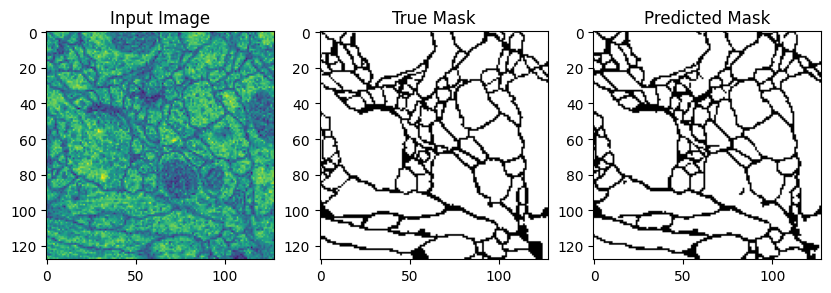
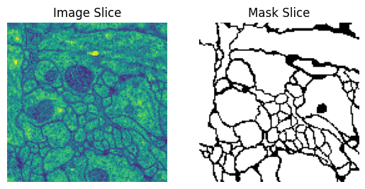

Un réseau U-Net apprend à séparer les membranes de l'intérieur des cellules sur des images de microscopie électronique. Entraîné sur les 30 coupes annotées du challenge ISBI-2012, il reconstruit un masque binaire fidèle à la structure du tissu.
Prédictions sur des coupes tenues à l'écart pendant l'entraînement. Cliquez une figure pour l'agrandir.


Téléchargement du volume ISBI-2012 : 30 coupes de microscopie et leurs membranes annotées.
Redimensionnement, retournements, déformation élastique et normalisation avec Albumentations.
Un U-Net encodeur décodeur avec connexions résiduelles sépare la membrane de l'intérieur.
Perte BCE + Dice, optimiseur Adam, early stopping et sauvegarde du meilleur checkpoint via PyTorch Lightning.
Seuillage de la sortie, mesure du Dice et de l'IoU sur les coupes de validation.
Ce dataset est petit et exigeant. Chaque difficulté appelle une réponse précise dans le code.
Un chemin comprime l'image pour en extraire le sens, un second la reconstruit pixel par pixel.